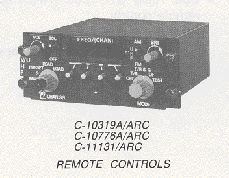

I am currently working on the ARC-182 control panel. This panel is located in the middle of the RIOs left side console and controlls the UHF/VUHF comms radio for the aircraft. The first step was to source the switches and led display. the switches I used can be bought from digikey. I found a nice 6 digit 7 segment display that has a built in MAX7219 controller from propwashsim.com.
Next, A test panel was made from clear acrylic. The plan is to have 3 layers, the rear will be black acrylic and will hold the hardware in place. A middle layer of clear or white will fill the space and add supports to accommodate for washers and nuts. The last (top) panel will be white and panted black, the laser will etch a very thin layer to reveal the text that will be backlit by the LEDs.